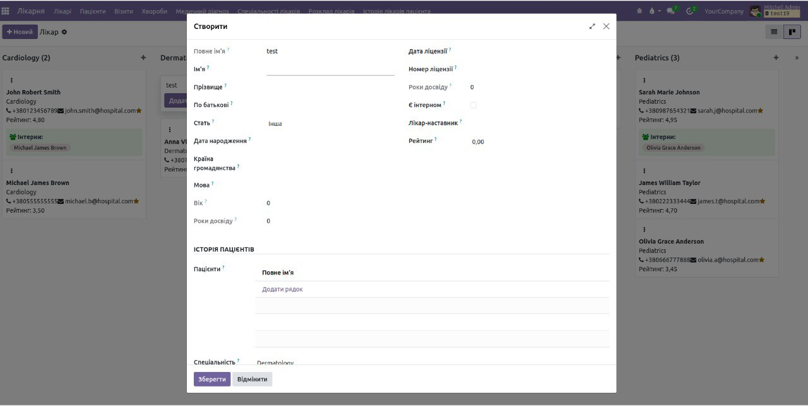
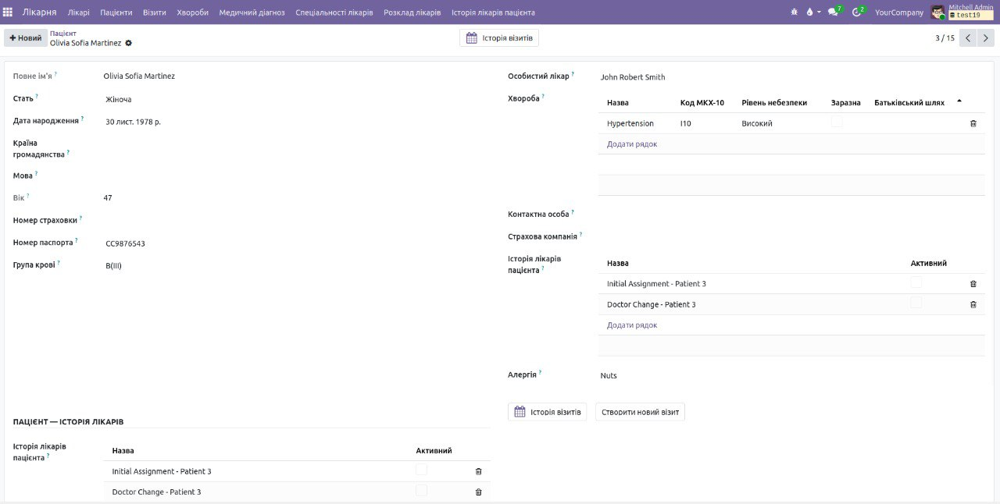
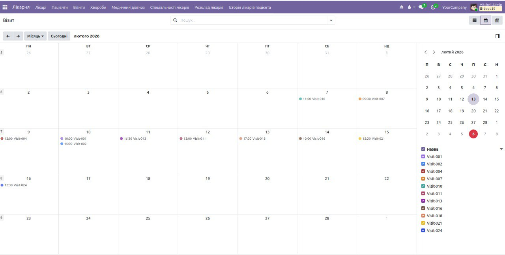
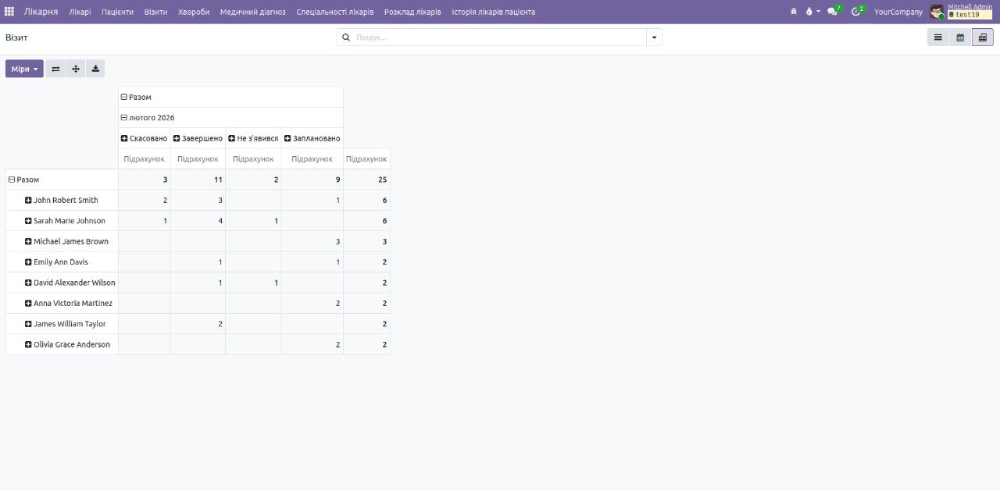

🏥 Hospital Management System
Comprehensive hospital management solution for Odoo 19. Manage doctors, patients, visits,
diagnoses, schedules, and medical records with ease.
Odoo 19.0
Community
Healthcare
✨ Key Features
👨⚕️
Doctor Management
- Complete doctor profiles
- Specializations
- Intern & mentor system
- Doctor schedules
- Rating system
🧑🦱
Patient Management
- Patient records
- Medical history
- Contact persons
- Doctor assignment
- Visit tracking
📅
Visit Management
- Appointment scheduling
- Visit status tracking
- Cost management
- Visit history
- Recommendations
🩺
Medical Diagnosis
- Diagnosis records
- Disease database
- Treatment prescriptions
- Severity levels
- Approval workflow
📊
Reports & Analytics
- Disease statistics
- Pivot tables
- Graph views
- Monthly reports
- Doctor reports (PDF)
🔒
Security & Access
- Role-based access
- Patient portal
- Doctor privileges
- Manager oversight
- Admin controls
📸 Screenshots
Doctor Management

Manage doctor profiles with specializations, schedules, and intern-mentor relationships.
Patient Records

Complete patient records with medical history, contact information, and assigned doctors.
Visit Scheduling

Schedule and track patient visits with status updates and cost management.
Analytics Dashboard

Comprehensive analytics with pivot tables and graphs for disease statistics.
🛠️ Wizards & Tools
Mass Doctor Reassignment
Quickly reassign multiple patients from one doctor to another with validation and history tracking.
Disease Report Wizard
Generate comprehensive disease reports filtered by doctors, diseases, and date ranges.
Visit Rescheduling
Efficiently reschedule patient visits with automatic notifications and conflict detection.
Schedule Generator
Automatically generate doctor schedules for weeks or months with customizable time slots.
Patient Card Export
Export patient information cards with QR codes and medical summaries.
⚙️ Technical Details
⚡ Performance Optimized: Efficient database queries, indexed fields, and optimized search views.
Models Included:
- Doctor (hr.hospital.doctor)
- Patient (hr.hospital.patient)
- Visit (hr.hospital.visit)
- Medical Diagnosis (hr.hospital.medical.diagnosis)
- Disease (hr.hospital.disease)
- Doctor Schedule (hr.hospital.doctor.schedule)
- Doctor Speciality (hr.hospital.doctor.speciality)
- Patient Doctor History (hr.hospital.patient.doctor.history)
- Contact Person (hr.hospital.contact.person)
Views Available:
- List/Tree views with advanced filtering
- Kanban views with drag & drop
- Form views with smart buttons
- Pivot views for analytics
- Graph views (bar, line, pie)
- Calendar views for schedules
Security Features:
- 5 user roles (Patient, Intern, Doctor, Manager, Admin)
- Record rules for data access
- Field-level security
- Hierarchical group inheritance
📦 Installation
- Download the module and place it in your addons directory
- Update the apps list in Odoo
- Search for "Hospital Management"
- Click "Install"
- Configure user roles in Settings → Users
💡 Tip: Enable demo data during installation to see sample doctors, patients, and visits.
📋 Requirements
- Odoo 19.0 Community
- PostgreSQL 12+
- Python 3.10+
- Base modules: base, web, mail
🤝 Support & Contributions
For bug reports, feature requests, or contributions:
- 📧 Email: Evgeny.norb@gmail.com
- 🌐 Website: https://odoo.school
- 💬 GitHub: https://github.com/EvgenyNorb/MyOdoo19Test/tree/19.0l